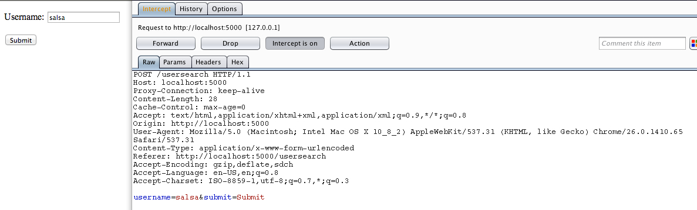
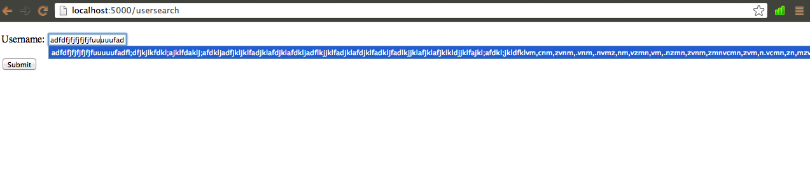
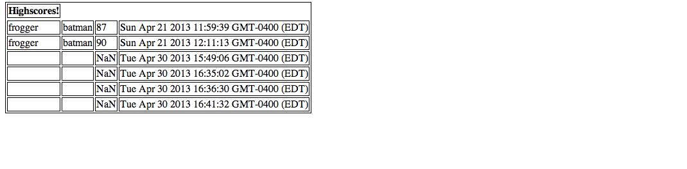

Compiled by Jake Lipson
Assignment 5 for Ming Chow's Web Programming class asked students to build a web application to receive scores for games, store them in a database, and display the top scores for games, as well as scores for user queries. While students successfully completed the assignment, they failed to take in to consideration certain security concerns that could present serious risks to users. Below, I have analyzed the work of Caroline Marcks, whose application is available to the instructor in her private repository on GitHub. I was able to analyze the application by working on a copy of Ms. Marcks' compressed application sent to me privately.
To begin my analysis of this application, I first ran the application on localhost, and attempted to submit scripts into the application through the usersearch API. After black box testing, I then used the Burp Suite to intercept and test requests and responses. Finally, I opened the code itself and analyzed any potentially questionable programming practices or security vulnerabilities.
Ms. Marcks' application successfully passes some crucial tests: her app rejects very common attacks such as SQL Injection and Cross-Site Scripting. However, her application is vulnerable to intrusion through proxies. This can result in an attacker sending unwanted requests, intercepting outside requests and responses, and modifying requests and responses. The application also fails to validate the input on one of its pages. While scripts and other things cannot be sent, the input can be of undetermined length. This can result in a crashed website. Finally, the application does not stop attackers from inserting into the database used. An attacker could insert any number of documents into the collection of data, potentially compromising the database.
This issue can be found throughout the application. It should be considered a LOW-risk issue because although an attacker can send unwanted requests and modify requests & responses, the scope of the damage he or she could cause is limited. That being said, the app does echo user input onto the /submit.json page, and so any inappropriate or dangerous content an attacker sends can find itself being displayed on the page. This issue is application-wide and was discovered using Burp Suite (see below).
This issue is present on the /usersearch page and the /submit.json page. The use of Jade, which escapes all input, helps prevent some attacks, but the form does not limit input size. This results in a potential overload scenario, in which service is discontinued. In the case that the input is being inserted into the database (/submit.json), the database could be overloaded. While the issue is low probability, the discontinuity of service makes it of MEDIUM severity. A simple resolution would be to put a size limit on all input, and to check size on all input before inserting it in the database.
This security risk is present on the /submit.json page. The issue is a lack of authentication required to insert documents into the mongoDB database. Open access to the database is a risk particularly because an attacker can send any number of documents to the database, potentially breaking it. An attacker could also insert false documents, compromising the integrity of the database. The issue is of HIGH severity. A resolution to this issue would require some sort of login or authentication to use the application's submit.json API. This would not be simple to implement, but necessary to run a successful application.
This application presents security vulnerabilities that make it more than feasible for an attacker to take down the entire app. The most valuable part of this application is the database, which stores sensitive score information. The attacker's ability to gain access and corrupt this database is scary. The programmer of this application should consider rebuilding the app to require authentication for MongoDB, and can also work to prevent attackers from displaying their own input or flooding the input bar.